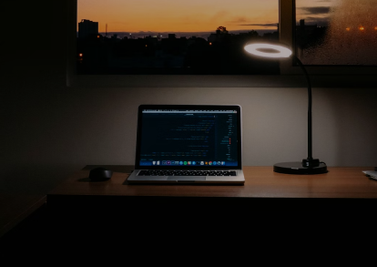

July 23, 2022
My new journey as a bootcamp student
After several months of learning in the Frontend Developer Career Path, I've made the big jump over to the Bootcamp to get expert code reviews of my Solo Projects projects and meet like-minded peers.
How I stay committed to learning
I like to think of myself as a lifelong learner. I used to spend hours and hours learning, then try to create simple projects using what I learned or work new techniques into existing projects.
While that was fun, I felt like it would be helpful to share what I was learning and most things about my journey with the world.
How I got started
I started simple and gradually grew my learning journal site. I would take notes about what I was learning. After each learning session, I'd use my notes to not only reflect on what I learned but also write short summaries of what I learned using my own words.
That helped me grok what I was learning, and I realized that posting my learning summaries was also helping others learn and stay motivated.